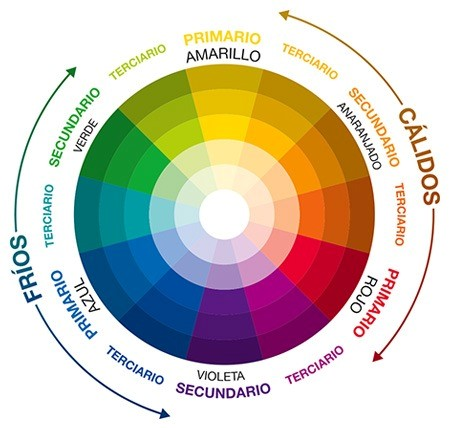

Marcos
TEORIA DEL COLOR
Es un conjunto de reglas que combina creatividad y ciencia. La teoría del color establece las pautas fundamentales en torno a las combinaciones de colores y la armonía.
Los diseñadores y artistas se basan en la teoría del color para tomar las decisiones correctas para sus proyectos,
pero no son los únicos que la utilizan.
La mayoría de las personas, sin saberlo, toman decisiones cotidianas basadas en la teoría y la armonía del color.
Para elegir siempre los mejores colores, los diseñadores utilizan una rueda de color y toman en cuenta varios aspectos como la capacidad óptica humana, psicología, cultura y más.

CONTACTANOS